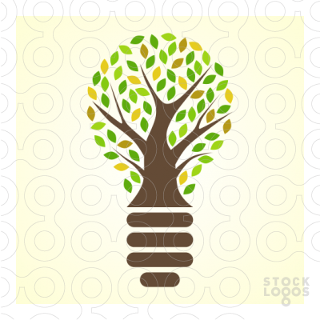

Ecology (from Greek: οἶκος, "house", or "environment"; -λογία, "study of"[A]) is the scientific analysis and study of interactions among organisms and their environment. It is an interdisciplinary field that includes biology, geography, and Earth science. Ecology includes the study of interactions organisms have with each other, other organisms, and with abiotic components of their environment.

Environmental protection is a practice of protecting the natural environment on individual, organizational or governmental levels,for the benefit of both the environment and humans. Due to the pressures of overconsumption, population and technology,the biophysical environment is being degraded,sometimes permanently. This has been recognized, and governments have begun placing restraints on activities that cause environmental degradation. Since the 1960s, activity of environmental movements has created awareness of the various environmental issues. There is no agreement on the extent of the environmental impact of human activity and even scientific dishonesty occurs, so protection measures are occasionally debated.